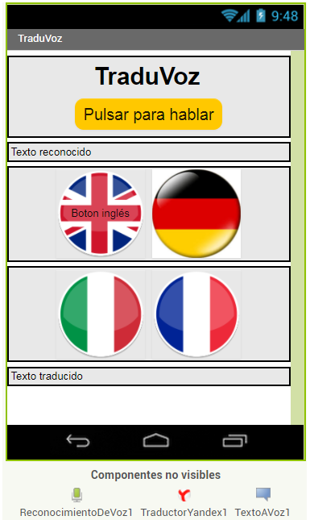
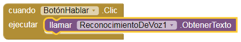
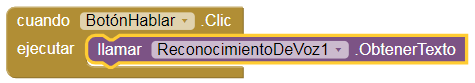
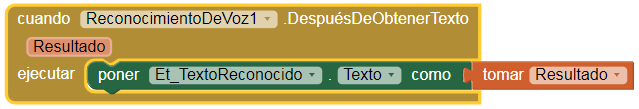
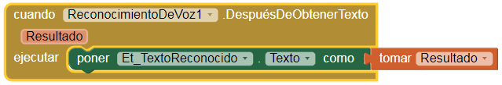
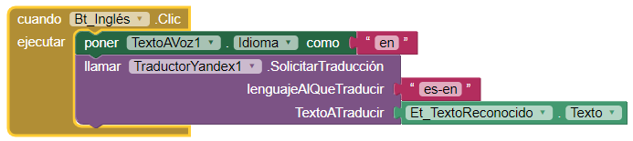
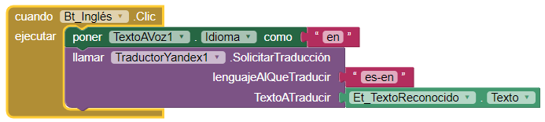
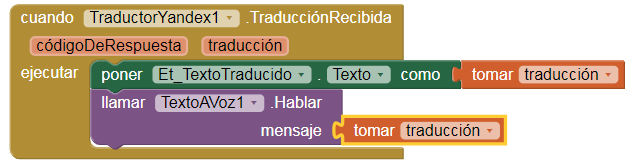
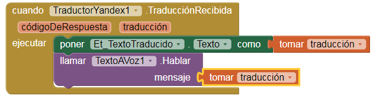

3.7. TraduVoz
Otras de las grandes posibilidades de MIT App Inventor son los componentes TextoAVoz, ReconocimientoDeVoz y TraductorYandex. Utilizando la síntesis de voz de Google podemos crear una completa y funcional aplicación traductora en pocos minutos.
Diseño de TraduVoz
Para el diseño de la aplicación vamos a utilizar los siguientes elementos:
- Disposición vertical, donde vamos a incluir una etiqueta y un botón.
- Disposición horizontal 1, con una etiqueta.
- Disposición horizontal 2, con dos botones.
- Disposición horizontal 3, con dos botones.
- Disposición horizontal 4, con una etiqueta.
- Del bloque Medios vamos a incluir TextoAVoz, ReconocimientoDeVoz y TraductorYandex.
Configura las propiedades de los componentes para que la aplicación tenga el siguiente aspecto:

Bloques de TraduVoz
Lo primero que va a hacer el usuario de la aplicación es pulsar el BotónHablar, por lo tanto, tenemos que llamar a la función "llamar ReconocimientoDeVoz.ObtenerTexto".
 

Ahora vamos a hacer que la voz captada por el micrófono aparezca como texto en la etiqueta Et_TextoReconocido.
 

A continuación, vamos a programar los botones de las banderas poniendo el texto con el idioma correspondiente. Luego, hacemos una llamada al Traductor Yandex para que realice la traducción. Para cada idioma debemos configurar las siglas del idioma correctamente, así como el lenguaje al que traducir.
Lista de códigos de países e idioma:
https://tech.yandex.com/translate/doc/dg/concepts/api-overview-docpage/
 

Por último, vamos a configurar el TraductorYandex. Este componente tiene dos elementos, códigoDeRespuesta que se utiliza para verificar si la traducción se ha realizado correctamente y traducción. Nosotros vamos a utilizar este último elemento para poner la traducción en la etiqueta Et_TextoTraducido. A continuación, vamos a llamar TextoAVoz para que sintetice la voz de la traducción.
 

Actividad
- Crea tu propia app traductora permitiendo al usuario traducir a 4 idiomas
- Modifica la aplicación para que nos permita la posibilidad de escribir en un campo de texto lo que se desea traducir.
- Cuidar la presentación de la aplicación personalizando fondo y botones, para darle un aspecto más profesional.
Obra publicada con Licencia Creative Commons Reconocimiento Compartir igual 4.0